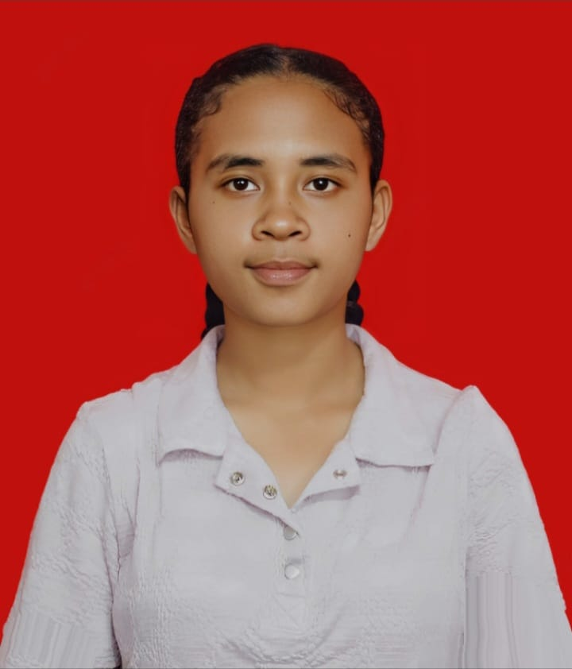

|
 |
Identitas Diri
|
Saya adalah mahasiswa Program Studi Teknologi Informasi Universitas Timor. Saya memiliki ketertarikan terhadap perkembangan, khususnya dalam bidang Analisis Data. Saya memiliki motivasi untuk terus belajar dan mengembangkan kemampuan dalam bidang teknologi informasi agar dapat memberikan manfaat bagi masyarakat.
Bidang yang paling saya minati adalah Data Analisis karena Bidang Analisis Data melatih saya untuk berpikir logis, teliti, dan sistematis dalam memahami suatu permasalahan.
| No. | Kode MK | Nama Mata Kuliah | SKS |
|---|---|---|---|
| 1 | TI201 | Pemrograman Web Dasar | 3 |
| 2 | TI202 | Basis Data | 3 |
| 3 | TI203 | Organisasi dan Arsitektur Komputer | 3 |
Target saya selama menempuh pendidikan di Program Studi Teknologi Informasi adalah meningkatkan kemampuan dalam Pemrograman dan Pengembangan Teknologi. Saya berharap dapat menjadi seorang Analisi Data yang mampu mengubah data mentah menjadi informasi berharga.
Kunjungi website resmi Universitas Timor
Silahkan mengisi form berikut jika ingin menghubungi saya